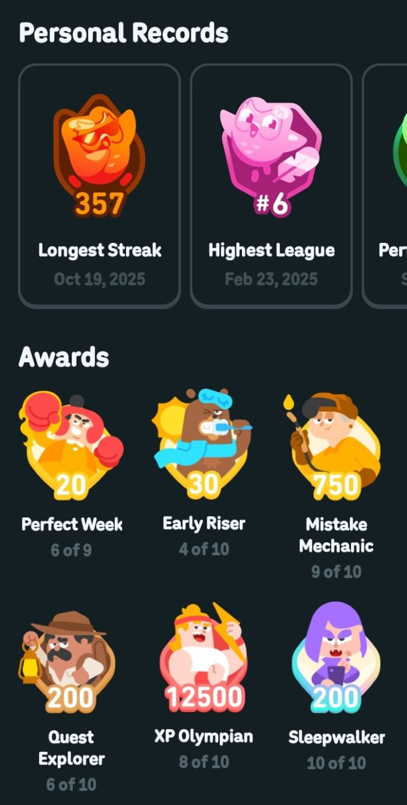
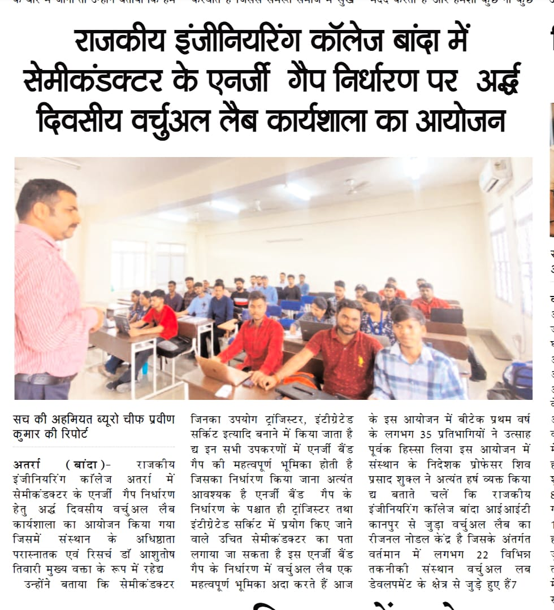
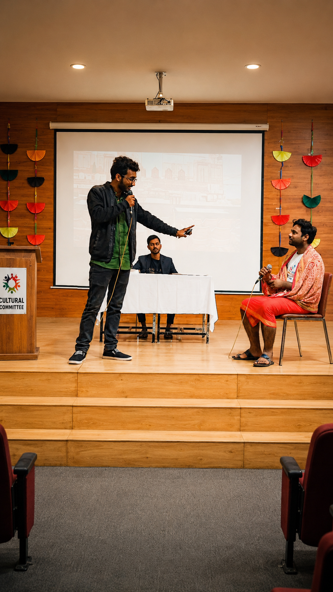
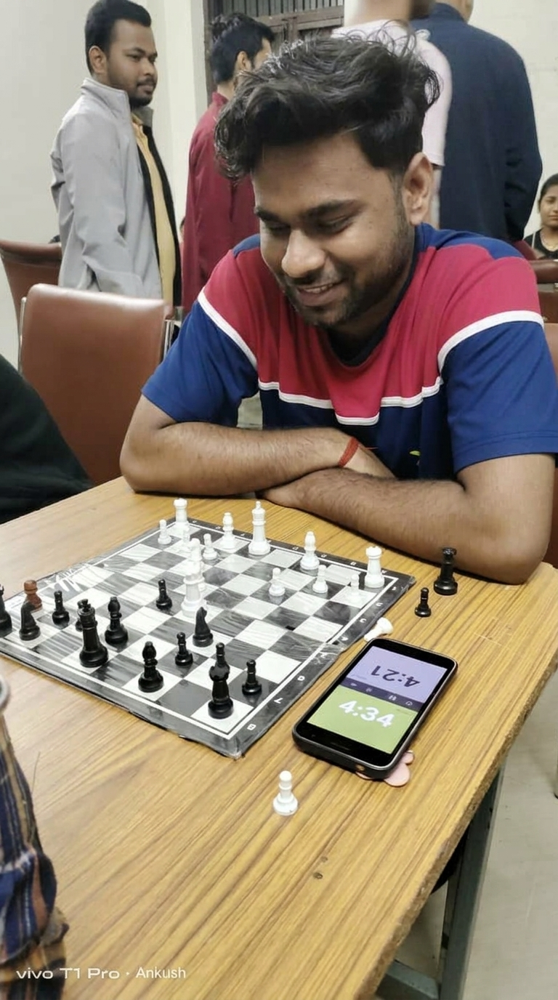
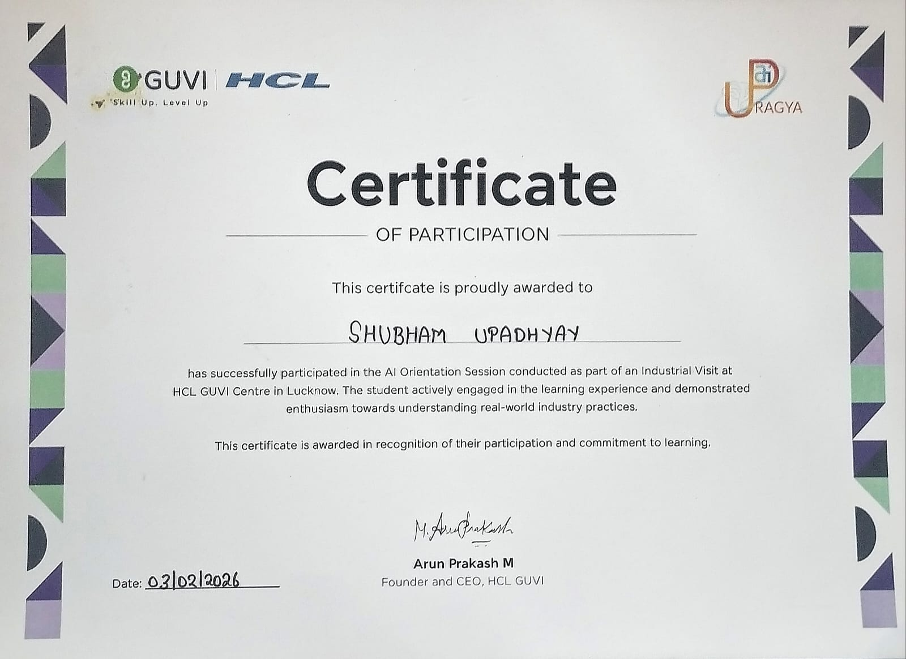
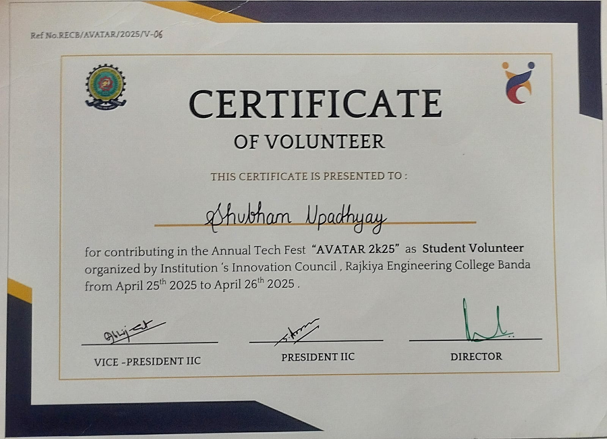
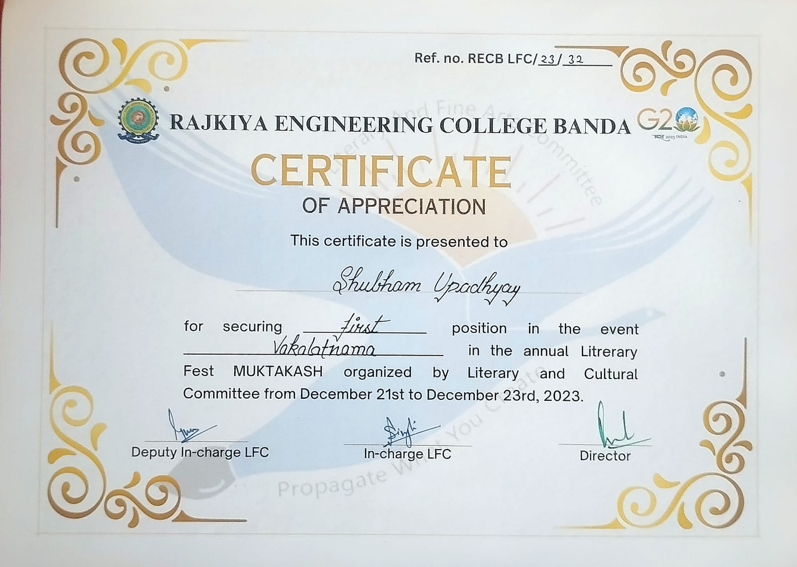
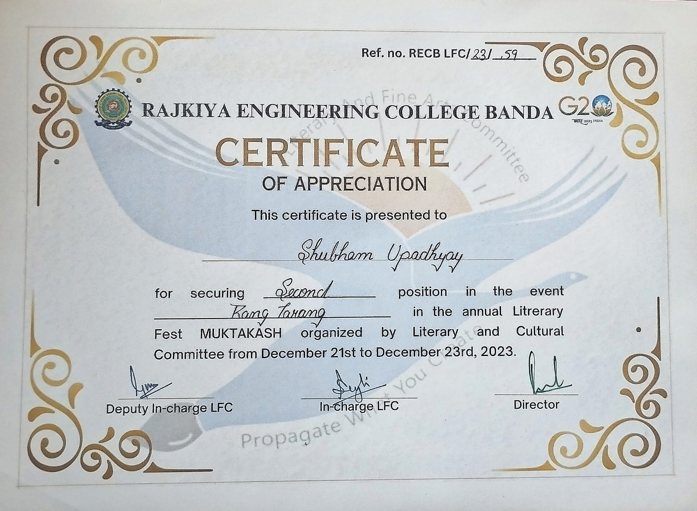

Beyond the Code
The creative, curious, multilingual human behind the data.
Data science is what I do — but it's not all I am. Here's a glimpse into the other things that make me who I am: creative pursuits, language adventures, campus life, and everything in between.
3D Animation — Blender
Blender is my creative outlet outside of data. I've worked on kids-category animations — designing for a specific audience, thinking about color, clarity, and engagement. That same audience-first thinking is what I bring to data visualization: making complex information simple, clear, and actually useful for the people reading it.
Spanish Language — Advanced (C1+)
I've been learning Spanish on Duolingo and have reached an Advanced C1+ level. But the numbers speak louder than the level — a 357-day longest streak, over 12,500 XP earned, a Top #6 League ranking, and badges like Sleepwalker (completed 10/10) and XP Olympian tell the real story. Nearly a full year of showing up every single day, no excuses. That kind of consistency doesn't stay in one area of life — it bleeds into everything I do, including how I approach data, deadlines, and difficult problems.

Campus Life & College Fests
College is more than classrooms. I've been featured in a college newspaper for participating in a day-long virtual lab workshop, represented REC Banda in public speaking and presentation events, and competed in chess tournaments on campus. Each of these taught me something different — communication, composure under pressure, and strategic thinking. The same skills that make a good chess player make a good data analyst: patience, pattern recognition, and thinking three steps ahead.



Certificates & Achievements
These aren't participation trophies — each one represents something I actually did. I attended an AI Orientation at HCL GUVI Centre, Lucknow as part of an industrial visit, volunteered at REC Banda's Annual Tech Fest AVATAR 2k25, secured 1st Position in a literary event at MUKTAKASH 2023, and also placed 2nd in a sports event at the same fest. Across academics, tech, literature, and sports — I show up and I compete.



